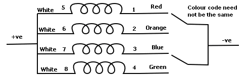
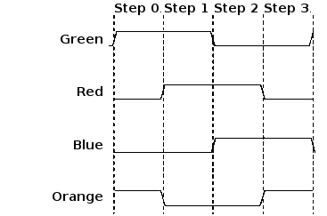
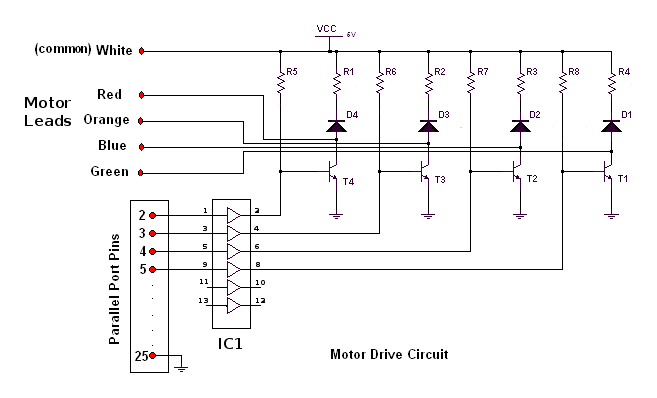
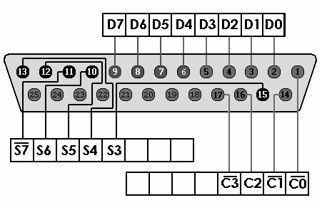

...making Linux just a little more fun!
By Sreejith N
This article is intended for those newbie Linux users who wish to use their Linux-box for some real work. I will also share some interesting experiments that I did with my AMD machine.
Learning new stuff is fun, but can be a bit frustrating. So, you want to write a device driver. The name itself is high-tech! You have some skills in the C programming language and want to explore the same. Also, you've written a few normal programs to run as processes in user space, and now you want to enter kernel space - where the real action takes place. Why Linux device drivers? The answer is,
Although it is possible to learn device driver coding by reading some books and PDFs written by the masters, this is a complicated and time-consuming approach. We will take the quick and easy approach, which is:
Let's make an easy start with some fundamentals.
Stepper motors are special direct-current (DC) motors, typically used in applications like camera zoom drive and film feed, fax machines, printers, copying machines, paper feeders/sorters, disk drives and robotics.
A DC stepper motor translates current pulses into motor rotation. A typical unipolar (single voltage) motor contains four winding coils. Applying voltage to these coils forces the motor to advance one step. In normal operation, two winding coils are activated at the same time, causing the motor to move one step clockwise. If the sequence is applied in reverse order, the motor will run counterclockwise. The speed of rotation is controlled by the frequency of the pulses.

A typical full step rotation is 1.8 degrees, or 200 steps per rotation (360 degrees). By changing the time delay between successive steps, the speed of the motor can be regulated, and by counting the number of steps, the rotation angle can be controlled.

| Green | Blue | Orange | Red | Hex Output Value | |
| Step 0 | 1 | 0 | 1 | 0 | A |
| Step 1 | 1 | 0 | 0 | 1 | 9 |
| Step 2 | 0 | 1 | 0 | 1 | 5 |
| Step 3 | 0 | 1 | 1 | 0 | 6 |
The circuit diagram for the drive is shown below.

The circuit consists of four TIP122 power transistors (T1, T2, T3 and T4), 220Ω resistors (R1, R2, R3 and R4), 3.3KΩ resistors (R5, R6, R7 and R8), 1N4148 freewheeling diodes (D1, D2, D3 and D4), and one LM7407 buffer chip (IC1). The 7407 buffer used here is a hex-type open-collector high-voltage buffer. The 3.3KΩ resistors are the pull-up resistors for the open-collector buffer. The input for this buffer comes from the parallel port. The output of the buffer is of higher current capacity than the parallel port output, which is necessary for triggering the transistor; it also isolates the circuit from the PC parallel port and hence provides extra protection against potentially dangerous feedback voltages that may occur if the circuit fails. The diode connected across the supply and the collector is used as a freewheeling diode and also to protect the transistor from the back EMF of the motor inductance. The motor used in my experiments (and documented here) was an STM 901 from Srijan Control Drives.
During normal operation, the output pattern from the PC drives the buffer, and corresponding transistors are switched on. This leads to the conduction of current through those coils of the stepper motor which are connected to the energized transistor. This makes the motor move forward one step. The next pulse will trigger a new combination of transistors, and hence a new set of coils, leading to the motor moving another step. The scheme of excitation that we have used here has already been shown above.
You can use either the parallel port or the serial port for this purpose. We will be using parallel port as a digital interface between PC and the hardware (stepper motor drive). The parallel port can be considered as a register, and the I/O operations can be done simply by writing bit patterns (numbers like 0xA, 10, '1010', etc.) to this register. The base address of parallel port is 0x378. The PC parallel port is a 25 pin D-shaped female connector in the back of the computer. It is normally used for connecting computer to printer, but many other types of hardware for that port are available.

The original IBM PC's Parallel Printer Port had a total of 12 digital outputs and 5 digital inputs accessed via 3 consecutive 8-bit ports in the processor's I/O space.
To read a byte (8 bits) coming into a port, call inb
(port); to output a byte, call outb (value,
port) (please note the order of the parameters). The data outputs
are provided by an 74LS374 totem-pole TTL integrated circuit, which can
source (+) 2.6 mA and sink (-) 24 mA. The best option for preventing
damage to the port is to use optocouplers; by doing so, the port is
completely electrically isolated from external hardware devices.
Modules are pieces of code that can be loaded into and unloaded from a running kernel upon demand. They extend the functionality of the kernel without the need to reboot the system. Device drivers are a class of modules which allows the kernel to control hardware connected to the system. In this article, I have written a simple device driver to control a stepper motor drive; now it is time to log on to your console and start coding your very first module.
Let's have an unusual start! You have written so many "Hello, World" programs. So this time something different - "No gates, No windows, it's open". You will get these words printed on your console when you insert your first module.
/*mymodule.c - The simplest kernel module.*/
#include <linux/module.h> /* Needed by all modules */
#include <linux/kernel.h> /* Needed for KERN_ALERT */
int init_module(void)
{
printk("<1>No gates, No windows, it's open\n");
return 0;/* A non-0 return means init_module failed; module can't be loaded.*/
}
void cleanup_module(void)
{
printk("Goodbye\n");
}
The "start" function in a kernel module is init_module () which is called when the module is insmoded into the kernel, and the "end" (cleanup) function cleanup_module() is called just before it is rmmoded.
Kernel modules need to be compiled with certain GCC options to make them work. In addition, they also need to be compiled with certain symbols defined. This is because kernel header files need to behave differently, depending on whether we're compiling a kernel module or executable.
As an example, let's take a look at the options we're going to use in compiling the "stepper" module that we'll see a little later in this article:
TARGET := stepper
WARN := -W -Wall
INCLUDE:= /usr/src/linux-2.4/include
#INCLUDE:= -isystem /usr/src/`uname -r`/include
CFLAGS := -O2 -DMODULE -D__KERNEL__ ${WARN} -I${INCLUDE}
all : stepper.o
#${TARGET}.o : ${TARGET}.c
clean:
rm -rf *.o
You can learn more about make utility by reading "man make".
There is a lot of documentation on the Web, including PDFs and ebooks, on device drivers; also, you can download some useful guides from The Linux Documentation Project website. For the time being, just read these points carefully; later, you can move on to some detailed references.
Now let's examine our code.
#define MODULE
#include <linux/module.h>
#include <asm/uaccess.h>
#include <sys/io.h>
#include <linux/fs.h>
#define LPT_BASE 0x378
#define DEVICE_NAME "stepper"
static int Major,i,j,k;
static int Device_Open = 0;
//static int pattern[2][8][8] = {
// {{0xA,0x9,0x5,0x6},{0xA,0x8,0x9,0x1,0x5,0x4,0x6,0x2}},
// {{0x6,0x5,0x9,0xA},{0x2,0x6,0x4,0x5,0x1,0x9,0x8,0xA}}
//};
static int pattern[2][8][8] = {
{{0xA,0x9,0x5,0x6,0xA,0x9,0x5,0x6},{0xA,0x8,0x9,0x1,0x5,0x4,0x6,0x2}},
{{0x6,0x5,0x9,0xA,0x6,0x5,0x9,0xA},{0x2,0x6,0x4,0x5,0x1,0x9,0x8,0xA}}
};
int step()
{
if(k<8) {
// if(pattern[i][j][k]==0) {
// k=0;
// printk("%d\n",pattern[i][j][k]);
// k++;
// }
// else {
printk("%d\n",pattern[i][j][k]);
k++;
// }
}
else {
k=0;
printk("%d\n",pattern[i][j][k]); /*#####*/
k++; /*#####*/
}
return 0;
}
static int stepper_open(struct inode *inode,struct file *filp)
{
static int counter = 0;
if(Device_Open) return -EBUSY;
printk("Opening in WR mode...\n");
Device_Open++;
MOD_INC_USE_COUNT;
return 0;
}
static int stepper_release(struct inode *inode,struct file *filp)
{
printk("Clossing...\n");
Device_Open --;
MOD_DEC_USE_COUNT;
return 0;
}
static int stepper_write(struct file *file, const char *buffer, size_t len,
loff_t *offset)
{
char *data;
char cmd;
get_user(data,buffer);
switch (cmd=data) {
case 'H':
printk("Reffer README file\n");
break;
case 'h':
printk("Half-Step mode initialized\n");
j=0;
break;
case 'f':
printk("Full-Step mode initialized\n");
j=1;
break;
case 'F':
i=0;
step();
break;
case 'R':
i=1;
step();
break;
// default:
// printk("Give 'H' for Help\n");
// break;
}
return 1;
}
static struct file_operations fops={
open:stepper_open,
write:stepper_write,
release:stepper_release,
};
int init_module(void)
{
Major = register_chrdev(0, DEVICE_NAME, &fops);
if (Major < 0) {
printk("<1>Registering the character device failed with %d
\n",Major);
return Major;
}
printk("<1>Registered, got Major no= %d\n",Major);
return 0;
}
void cleanup_module(void)
{
printk("<1>Unregistered\n");
unregister_chrdev(Major,DEVICE_NAME);
}
Follow this link to download
the code.
mknod /dev/stepper c 254 0
A user space program can write commands to the device file to rotate the stepper motor through a desired angle at desired speed. The speed of rotation depends upon the delay given in the user program.
The built in commands for controlling the stepper motor is given below.
The driver makes use of the following device file operations:
If you write 'F' once to "/dev/stepper", the motor will rotate through its minimum step-angle. If you keep on writing 'F' to "/dev/stepper", it will rotate continuously. The "write" system call will do this for you.
#include "header.h" main () { char t,buf[6] = {'h','f','F','R','H','q'}; int fd,rt,i,j; size_t count; printf("Select Mode \n(1) [Half-step clockwise]\n(2) [Half-step anti-clockwise]\n(3) [Full-step clockwise]\n(4) [Full-step anti-clockwise] : "); t=getchar(); if(t=='1') {i=0; j=2;} else if(t=='2') {i=0; j=3;} else if(t=='3') {i=1; j=2;} else {i=1; j=3;} fd=open("stepper",O_WRONLY); rt=write(fd,&buf[i],count); for(i=0;i<1000;i++) { rt=write(fd,&buf[j],count); usleep (100000); } close(fd); }
Also, if you are familiar with shell scripting, you can do the same by writing a simple shell script. Now you can start talking to the device /dev/stepper. It will be really interesting if you talk in Linux's language - I mean a shell script. Just use simple echo commands as given below:
echo H > /dev/stepper
Do you think that Morpheus is talking to you? Your kernel is replying to your commands. How's that! Now, you too can feel like you are The One.
I hope I have given you some basics of device driver coding and perhaps a "small step toward Robotics". Here is a detailed schematic of a stepper-controlled robotic arm; feel free to try it out. One can connect three stepper motors simultaneously to the PC parallel port and can achieve step-wise mobility; this allows anyone to start thinking of complex innovative mobility with multi-threaded programming in Linux. You can also add C functions to our module to enhance its functionality... the possibilities are endless!
I am a Linux enthusiast living in India. I enjoy the freedom and power that
Linux offers. I must thank my mentor Mr. Pramode C. E. for introducing me to
the wonderful world of Linux.
I completed my B-Tech in Electrical and Electronics Engineering from Govt.
Engineering College, Thrissur (Kerala, India) (2001 - 2005). Presently I am
working in inDSP Audio Technologies Pvt. Ltd, Trivandrum, India as an
Embedded Systems Engineer.
I spend my free time reading books on Linux and exploring the same. My
other areas of interest include device drivers, embedded
systems, robotics and process control.

{kind=link}